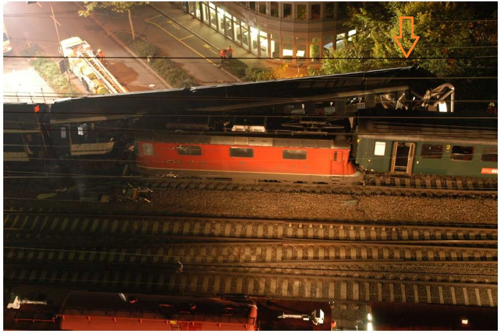

How did it come that I got poor by money?
20 years ago I worked as software developmer in technical informatics on shopfloor wide automation systems and electronics, communication an so on. Originally I studied Mathematics and Physics in Zürich. One should think that it hardly can happen that one gets poor with this education. But that is by far not the case.
One good day,it was the 24. October 2003, I drove home by SBB-train after work. The train drove and drove..... but then suddenly, at 17H45, a loud bang cracked through the wagon and I heared a loud crunching coming up from the train's wheels. It felt out of the wheels. For a short second I thought: "hopefully it will roll out to a stop softly like an aircraft when landing". But at this very moment I felt flying head in front towards the train's front wall. An hour later or so I layed in the hospital with some broken vertebra bones.
orange arrow on pix below shows where I was sitting in the train
near Oerlikon Zurich train station

(picture copyright by StapoZürich)
As a consequence of this accident I suffer severe pains until today and I still stand under medical treatement. My ability what I can do during the day is restricted and I have to plan everything around the regular pains. Many things from before that I can do no more I miss sadly, but I also discovered new activities. The worst is, that when I work longer then in average one to three hours, severe pain comes over me and I have to stop whatever I do. Then I have to take pain medication and lay down whenever the pain allowes. else I walke around and hope and wait for relief. That's my life. Im am looking for vocational rehabilitation after accident, but can work ust between 50 to 60 percent at maximum, but this depends very much on how optimal the whole situation can be arranged. Until today I am seeking without any success. In most cases the human resource departments would like very much an employment, but the software development departments refuse working with someone in my circumstances. They are not willing to take the risk and look mostely only for developers who can work between 100 and 120 percent.
The first 13 years I got payed my salary furthermore by the accident insurance company. Then they said they need to close the case by their side. In the order of the managers of the insurance company, an expertise was made, paid by the insurance company, exclusively by doctors of the insurance company, except one who wanted to get an insurance company's doctor, in the institution of the insurance company, and almost exclusively in favour of the insurance company except a small monthly charity that was left to me. In addiction they claimed the expertise as "neutral". An so I got poor and live from social welfare office. This is cheating like swiss species do.
But now I will write some lines about happiness. Injustice was done to me. Nobody who stays close to me doubt this. This can make one angry, and it also did me the first time. I think that is natural and most people will react like this.
more tomorrow......